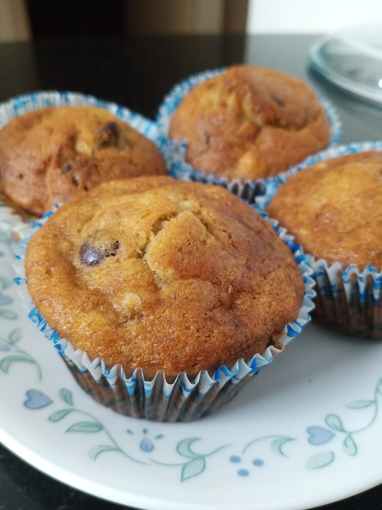

Welcome to
Sharmi's Recipe Portal

Here's how you can make your own Garlic Bread
Ingredients
Hand Full Garlic and Green Chili ・ Paste it!
Grate ・ 2 Full Pocket Cheese
250 Grams ・ Panner - Grate it
3-4 Capsicums ・ Cut it tiny pieces
The Recipe
Mix it all well, You will get a thick paste consistency.
Then
Apply butter on bread first, and then apply the garlic paste and toast it for 10 mins at 180 degrees.
Also Preheat the oven.
Mode ・Toast
Time ・ 10 Minutes.
Temperature ・ 180 Degrees
You can also add oregano powder and chilli flakes on top!
Enjoy your tasty garlic bread toast!

Here's how you can make your own Banana Chocochip Muffins!
Ingredients
1 1/2 cups (190 grams) ・ Maida (All purpose flour) / Or wheat flour
1/2 cup ・ Oil
1/2 cup (50 grams) ・ Powdered Sugar
1 teaspoon ・ Baking powder
1 teaspoon ・ Baking soda
1/4 teaspoon ・ Salt
3 Ripe medium bananas, mashed with a fork ・ (1 1/4 cups mashed)
1 ・ Egg
1/2 teaspoon ・ Vanilla extract
3/4 cup (100- 150 gram) ・ Chocolate chips
The Recipe
Heat oven to 350 degrees Fahrenheit. Line muffin cups with paper liners. This recipe makes more than 12 muffins.
Whisk the flour, brown sugar, baking powder, baking soda, and salt in a large bowl.
In another bowl, whisk the oil, mashed banana, egg, and vanilla until blended.
Add the banana mixture to the bowl with dry ingredients then use a fork to combine. Do not over mix. Stir in chocolate. Fill muffin cups 3/4 full. Bake until a toothpick can be inserted and comes out clean, 15 to 25 minutes.
(For mini muffins, expect that the bake time will be 10 to 15 minutes.)
Enjoy your tasty banana choco chip muffins!